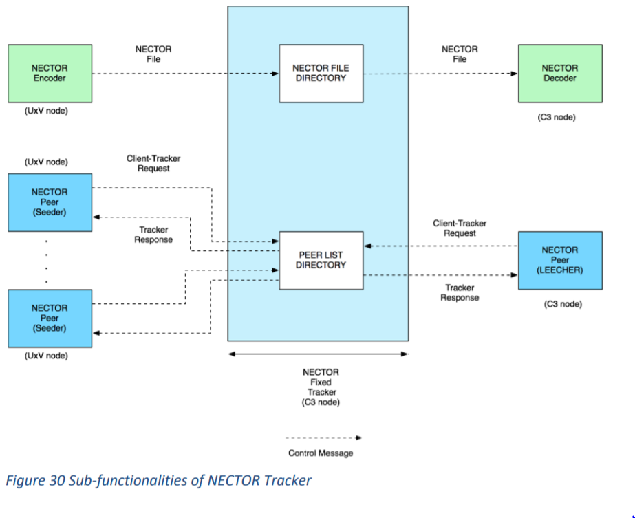

– It is located at C3 node. It is responsible for managing ClientTracker requests and Tracker responses. It adds the available Peers (Seeders and Leechers) to its Peer list directory via Client-Tracker requests and sends the list of available Peers to each Peer.
